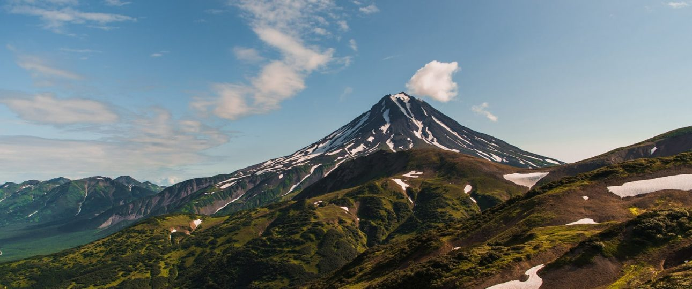

Тур “на Камчатку – Легко!”
Не так много есть мест на нашей планете, где можно встретить такое природное разнообразие, как на Камчатке. Люди, приезжающие сюда, оказываются в самом сердце первозданной природы. Ее красота потрясает. Естественные процессы, происходящие в недрах планеты, здесь видны воочию на поверхности. На Камчатке на собственном опыте …